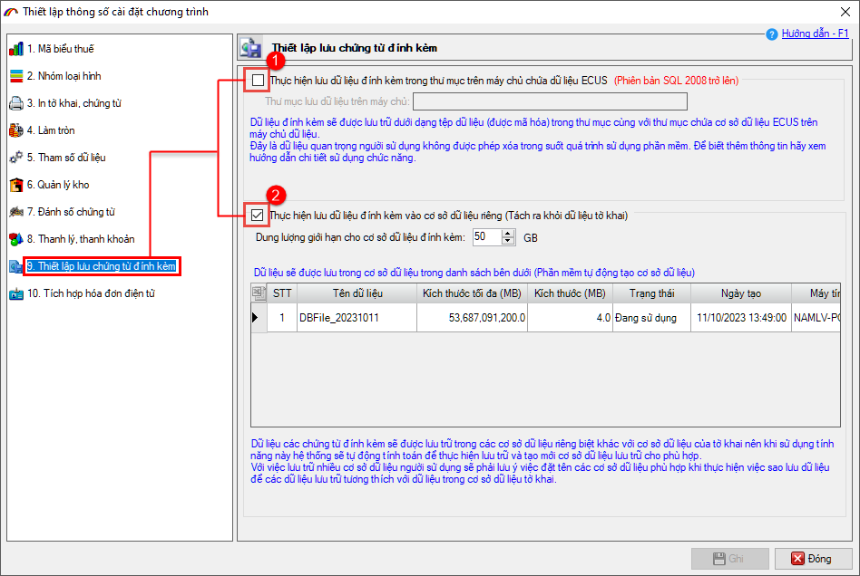
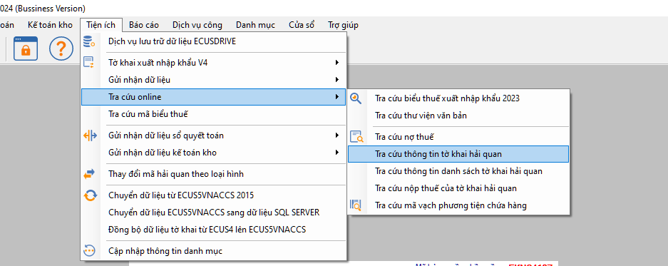

NHỮNG THAY ĐỔI TRÊN BẢN ECUS5VNACCS 2018
(Phiên bản update 08/05/2024)
Phần mềm ECUS5VNACCS2018 - Ngày phát hành 10/05/2024 | Version 6.0.146 | Lastupdate 08/05/2024 | Phiên bản CSDL 295
Phiên bản cập nhật ngày 08/05/2024 được phát hành ngày 10/05/2024 sửa đổi bổ sung một số chức năng, nhằm tăng hiệu suất phần mềm. Các chức năng được sửa đổi, bổ sung cụ thể như phần chi tiết dưới đây:
- 1. Cho phép doanh nghiệp lựa chọn lưu chứng từ đính kèm ra thư mục hoặc DB riêng biệt.
Ở bản nâng cấp này, phần mềm cho phép doanh nghiệp cấu hình để lưu các chứng từ đính kèm của tờ khai ra thư mục hoặc lưu vào một cơ sở dữ liệu (CSDL) riêng biệt, khác với cơ sở dữ liệu của chương trình. Điều này sẽ làm giảm dung lượng CSDL chính của chương trình, cải thiện tốc độ truy cập và các thao tác trong quá trình khai báo.

- 2. Thông báo về việc gia hạn chữ ký số do Công ty Thái Sơn cung cấp.
Đối với các doanh nghiệp đang sử dụng thiết bị chữ ký số của CA2 (tiêu chuẩn SHA1) sẽ hết hạn vào ngày 10/07/2024 do chính sách của Bộ thông tin truyền thông với nhà cung cấp chữ ký số (mặc dù ngày sử dụng trên hợp đồng có thể vẫn còn nhiều thời gian).
Phần mềm sẽ tự động kiểm tra và hiển thị thông báo nếu CKS của doanh nghiệp thuộc trường hợp trên.
Khi nhận được thông báo, doanh nghiệp vui lòng liên hệ Công ty Thái Sơn theo số tổng đài: Miền Bắc 19004767 Miền Trung - Nam 19004768 để được hỗ trợ kịp thời, không làm ảnh hướng đến quá trình khai báo tờ khai, chứng từ.
Công ty Thái Sơn sẽ gia hạn lại cho chữ ký số của doanh nghiệp đúng như ngày hết hạn trên hợp đồng theo sự cấp phép mới của Bộ thông tin và truyền thông.
- 3. Cải tiến chức năng tra cứu thông tin tờ khai online.

Tình trạng hiện tại: Khi doanh nghiệp tra cứu thành công thông tin, nhấn cập nhật để cập nhật thông tin cho tờ khai thì phần mềm cũng sẽ đóng luôn form tra cứu.
Cải tiến ở bản update mới: Sau khi cập nhật thông tin cho tờ khai, form tra cứu vẫn hiện để doanh nghiệp tiếp tục thực hiện việc tra cứu cho tờ khai khác.
- 4. Cùng nhiều chức năng, tiện ích khác nhằm nâng cao hiệu suất chương trình...
Bản quyền © thuộc về Công ty TNHH Phát triển công nghệ Thái Sơn